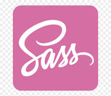
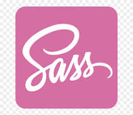

HELLO
I'm Abishek Narayan V
I am a Full Stack Engineer Currently Working @ Cognizant Technology Solutions as Programmer Analyst Trainee, I was selected through On-Campus Placement Recruitment during my UnderGraduate Degree Program, I Began as an Intern on my seventh semester into the oraganization, Excelling through three stages of evaluation: Qualifier, Interim-Check and Final SME which held in Bangalore. Post successful Completion of all the evaluation, I became a Full-Time Employeement on september 1, 2023


 


WHAT AM I EXPERTISE WITH ?
I Specialize in developing Web and Mobile Application Using MEAN as Key Technology Stack
- MongoDB for database management
- Express.js for backend web framework
- Angular for client-side frontend framework
- Node.js for the backend runtime environment
In addition to my expertise with frameworks, I have experience creating dynamic and responsive web pages without them, using pure HTML5 and CSS3 for responsive web design (RWD). I can also build frontend web applications with native JavaScript and Vanilla JavaScript for simple user interfaces.
Undergraduate
Pre-University


MY EARLY EDUCATION IN PRE-UNIVERSITY
Pre-University
I Completed my pre-university education @ Velammal Matriculation Higher Secondary School in Chennai from 2016 to 2019.During my pre-university years, I took three consecutive state board eaxamination for classes 10, 11 and 12.After passing class 10, I chose a Major in Computer Science with subjects including Math, Physics, Chemistry, French and English
Search- Studied @ Velammal Matriculation Higher Secondary School
- Curriculam Subject : English, Tamil, Math, Science, Social Science
- completed between 2016 - 2017
- With 91.8 percentage
- Studied @ Velammal Matriculation Higher Secondary School
- Curriculam Subject : French, English, Math, Computer Science, Physics, Chemistry
- completed between 2017 - 2018
- With 70 percentage
- Studied @ Velammal Matriculation Higher Secondary School
- Curriculam Subject : French, English, Math, Computer Science, Physics, Chemistry
- completed between 2018 - 2019
- With 65.1 percentage

MY UG EDUCATION IN UNIVERSITY
University
UnderGraduate education @ SRM Institute of Science and Technology in Chennai from 2019 to 2023
SearchUG Degree
I graduated with First Class honors and distinction,Earning my Bachelor Of Technology degree in Information Technology .During my UG Degree Program, I engaged in variety of projects and internships, gaining hands-on experience in software development,I was actively involved in technology-related events which helped me build solid foundation in IT
SearchIn my first semester, I took a variety of foundational courses that provided a solid grounding in preparation for pursuing Information Technology
- Curriculam Subject : Semiconductor Physics, Calculus and Linear Algebra, Basic Electrical and Electronics Engineering, Engineering Graphics Design, Professional Skills and Practices, Physical and Mental Health Using Yoga, Constitution Of India and English
- My SGPA for the Semester was : 6.65
In my second semester, I took fundamental courses that provided a solid grounding as i continued my journey in Information Technology
- Curriculam Subject : Programming For Problem solving, Advanced Calculus and Complex Analysis, Chemistry, Civil and Mechanical Engineering Workshop, Value Education, NSO, General Aptitude and German
- My SGPA for the Semester was : 7.57
In my third semester,I Officially began my journey into Information Technology by taking courses that expanded my knowledge in the field
- Curriculam Subject : Trandforms and Boundary Value Problems, Management Principles For Engineers, Analog and Digital Electronics, Object Oriented Design and Programming, Computer Organization and Architecture, Data Structures and Algorithms, Competencies in Social Skills and Biology
- My SGPA for the Semester was : 9.50
In my Fourth semester, I Continued to build upon my journey into Information Technology by taking courses that expanded my knowledge in the field
- Curriculam Subject : Probability and Queueing Theory, Design and Analysis Of Algorithms, Software Engineering and Project Management, Operating Systems, Advanced Programming Practice, Computer Communications, Environmental Science, Critical and Creative Thinking Skills, Competitive and Professional Skills-1 and Social Engineering,
- My SGPA for the Semester was : 9.31
In my Fifth semester, I delved deeper into Core Information Technology courses
- Curriculam Subject : Discrete Mathematics For Engineers, Formal Language and Automata, Computer Networks, Information Storage and Management, Web Programming, Quality Control For Biomedical Devices, Indian Traditional Knowledge, Competitive Professional Skills-2, Analytical and Logical Thinking Skills, Seminar-1
- My SGPA for the Semester was : 8.95
In my sixth semester, I Started gaining advanced knowledge and technical skills of Information Technology
- Curriculam Subject : Employability Skills and Practices, Database Management Systems, Compiler Design, Artificial Intelligence, Wireless Sensor Networks, Internet Security and Cyber Forensics, Fiber Optics and Opto Electronics, Competitive Professional Skills-3, Comprehension, Indian Art Form, Seminar-2
- My SGPA for the Semester was : 8.40
In my seventh semester, I Started working on my Minor Project and i continued studying key modules that enhanced my knowledge about Information Technology
- Curriculam Subject : Minor Project, Integrative Programming and Technology, IT Service Management and Operations, Short-Range Wireless Communication
- My SGPA for the Semester was : 8.39
In my last semester, I Started working on my Major Project and secured an Internship @ Cognizant Technology Solutions
- Curriculam Subject : Major Project and Internship(Experience Knowledge Check)
- My SGPA for the Semester was : 9.70